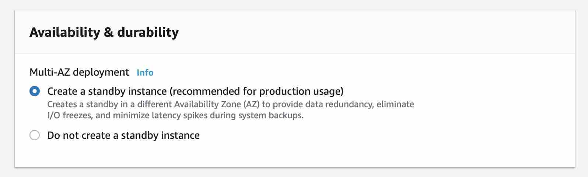

Amazon Aurora
An Amazon Aurora DB cluster consists of one or more DB instances and a cluster volume that manages the data for those DB instances. An Aurora cluster volume is a virtual database storage volume that spans multiple Availability Zones, with each Availability Zone having a copy of the DB cluster data. Two types of DB instances make up an Aurora DB cluster:
Each Aurora DB cluster has one primary DB instance and can have up to 15 Aurora Replicas.
Primary DB instance – Supports read and write operations, and performs all of the data modifications to the cluster volume.
Aurora Replica – Connects to the same storage volume as the primary DB instance and supports only read operations. Aurora automatically fails over to an Aurora Replica in case the primary DB instance becomes unavailable. You can specify the failover priority for Aurora Replicas. Aurora Replicas can also offload read workloads from the primary DB instance.
Aurora Replicas have two main purposes. You can issue queries to them to scale the read operations for your application. You typically do so by connecting to the reader endpoint of the cluster. That way, Aurora can spread the load for read-only connections across as many Aurora Replicas as you have in the cluster. Aurora Replicas also help to increase availability. If the writer instance in a cluster becomes unavailable, Aurora automatically promotes one of the reader instances to take its place as the new writer. While setting up a Multi-AZ deployment for Aurora, you create an Aurora replica or reader node in a different AZ.
You use the reader endpoint for read-only connections for your Aurora cluster. This endpoint uses a load-balancing mechanism to help your cluster handle a query-intensive workload. The reader endpoint is the endpoint that you supply to applications that do reporting or other read-only operations on the cluster. The reader endpoint load-balances connections to available Aurora Replicas in an Aurora DB cluster.
Types of Aurora endpoints
An endpoint is represented as an Aurora-specific URL that contains a host address and a port.
Cluster endpoint (or writer endpoint)
- connects to the current primary DB instance for
that DB cluster. Only one that can perform write operations such as DDL statements and for read operations,
such as queries.
Each Aurora DB cluster has one cluster endpoint and one primary DB instance.
The cluster endpoint provides failover support for read/write connections to the DB cluster. If the current
primary DB instance of a DB cluster fails, Aurora automatically fails over to a new primary DB instance. During
a failover, the DB cluster continues to serve connection requests to the cluster endpoint from the new primary
DB instance, with minimal interruption of service.
Reader endpoint -
provides load-balancing support for read-only connections to the DB
cluster. Use the reader endpoint for read operations, such as queries. By processing those statements on
the read-only Aurora Replicas, this endpoint reduces the overhead on the primary instance. Each Aurora DB
cluster
has one reader endpoint and helps scale the capacity to handle simultaneous SELECT queries.
If the cluster contains one or more Aurora Replicas, the reader endpoint load-balances each connection request
among the Aurora Replicas. In that case, you can only perform read-only statements such as SELECT in that
session. If the cluster only contains a primary instance and no Aurora Replicas, the reader endpoint connects to
the primary instance. In that case, you can perform write operations through the endpoint.
Custom endpoint - represents a set of DB instances that you choose. When you connect
to the endpoint, Aurora performs load balancing and chooses one of the instances in the group to handle the
connection. You define which instances this endpoint refers to, and you decide what purpose the endpoint serves.
An Aurora DB cluster has no custom endpoints until you create one (max five custom endpoints
for each provisioned Aurora cluster). You can't use custom endpoints for Aurora Serverless clusters.
The custom endpoint provides load-balanced database connections based on criteria other than the read-only or
read/write capability of the DB instances. For example, you might define a custom endpoint to connect to
instances that use a particular AWS instance class or a particular DB parameter group. Then you might tell
particular groups of users about this custom endpoint. For example, you might direct internal users to
low-capacity instances for report generation or ad hoc (one-time) querying, and direct production traffic to
high-capacity instances.
Because the connection can go to any DB instance that is associated with the custom endpoint, we recommend that
you make sure that all the DB instances within that group share some similar characteristic. Doing so ensures
that the performance, memory capacity, and so on, are consistent for everyone who connects to that endpoint.
This feature is intended for advanced users with specialized kinds of workloads where it isn't practical to keep
all the Aurora Replicas in the cluster identical. With custom endpoints, you can predict the capacity of the DB
instance used for each connection. When you use custom endpoints, you typically don't use the reader endpoint
for that cluster.
Instance endpoint - connects to a specific DB instance within an Aurora cluster.
Each DB instance in a DB
cluster has its own unique instance endpoint. So there is one instance endpoint for the current primary DB
instance of the DB cluster, and there is one instance endpoint for each of the Aurora Replicas in the DB
cluster.
The instance endpoint provides direct control over connections to the DB cluster, for scenarios where using the
cluster endpoint or reader endpoint might not be appropriate. For example, your client application might require
more fine-grained load balancing based on workload type. In this case, you can configure multiple clients to
connect to different Aurora Replicas in a DB cluster to distribute read workloads. For an example that uses
instance endpoints to improve connection speed after a failover for Aurora PostgreSQL, see Fast failover with
Amazon Aurora PostgreSQL. For an example that uses instance endpoints to improve connection speed after a
failover for Aurora MySQL, see MariaDB Connector/J failover support - case Amazon Aurora.